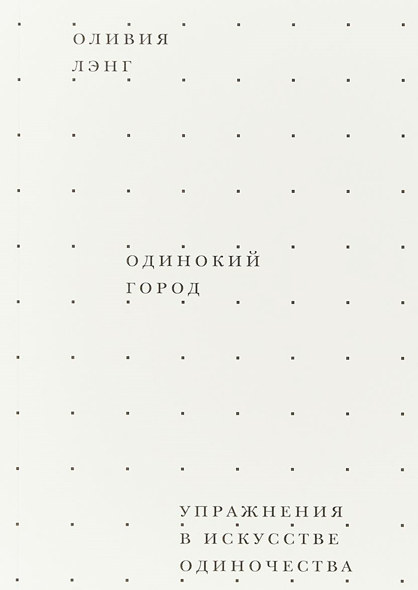

<!DOCTYPE html>
<html prefix="og: http://ogp.me/ns#"></html>
<head>
  <meta charset="utf-8"/>
  <meta name="viewport" content="width=device-width, initial-scale=1.0"/>
  <meta property="og:url" content="http://chernotrop.reviews/lang-lonely-city"/>
  <meta property="og:type" content="article"/>
  <meta property="og:title" content="Одинокий город"/>
  <meta property="og:description" content="О хорошо написанной истории общественного отчуждения."/>
  <meta property="og:image" content="http://chernotrop.reviews/img/lang-lonely-city-preview.jpg"/>
  <meta property="og:image:width" content="1200"/>
  <meta property="og:image:height" content="600"/>
  <link href="https://fonts.googleapis.com/icon?family=Material+Icons" rel="stylesheet"/>
  <link rel="stylesheet"/><!-- Yandex.Metrika counter --> <script type="text/javascript" > (function(m,e,t,r,i,k,a){m[i]=m[i]||function(){(m[i].a=m[i].a||[]).push(arguments)}; m[i].l=1*new Date();k=e.createElement(t),a=e.getElementsByTagName(t)[0],k.async=1,k.src=r,a.parentNode.insertBefore(k,a)}) (window, document, "script", "https://mc.yandex.ru/metrika/tag.js", "ym"); ym(56951962, "init", { clickmap:true, trackLinks:true, accurateTrackBounce:true, webvisor:true, trackHash:true }); </script> <noscript><div></div></noscript> <!-- /Yandex.Metrika counter -->
  <title>Одинокий город</title>
<link href="./css/style.bundle.css" rel="stylesheet"></head>
<body class="body_light">
  <header class="header header_dark">
    <div class="header__logo">
      <div class="logo logo_dark"><a class="logo__link" href="/">ЧЕРНОТРОП</a></div>
    </div>
    <nav class="header__menu"><a class="menu-item menu-item_active" href="index.html" target="blank">главная</a><a class="menu-item" href="contacts.html">контакты</a><a class="menu-item" href="http://ttttt.me/blacktrope" target="blank">telegram-канал</a>
    </nav>
    <div class="header__menu_mobile" id="modeValue"><a href="menu.html">
        <svg xmlns="http://www.w3.org/2000/svg" width="24px" height="24px" viewBox="0 0 24 24">
          <path d="M0 0h24v24H0z" fill="none"></path>
          <path class="icon_white" d="M3 18h18v-2H3v2zm0-5h18v-2H3v2zm0-7v2h18V6H3z"></path>
        </svg></a>
    </div>
  </header>
  <article class="article">
    <div class="article__header">
      <h1 class="article__headline">Одинокий город</h1>
      <p class="article__description">О хорошо написанной истории общественного отчуждения</p>
    </div>
    <div class="article__content">
      <div class="article__content-row">
        <div class="article__content-left">
          <p>В конце прошлого года издательство Ad Marginem совместно с музеем современного искусства «Гараж» перевело книгу английской журналистки Оливии Лэнг «Одинокий город». В «Одиноком городе» писательница рассказывает истории нью-йоркских художников и акционистов, смешивая их с личными ощущениями — переехав из Англии в Нью-Йорк ради романтических отношений, Лэнг быстро остаётся одна в незнакомом городе и преодолевает боль расставания, изучая проблемы современного общества: нехватку близости, осуждение непохожих, череду комплексов и страхов.</p>
          <p>На русский язык труд Оливии Лэнг перевели впервые, но на Западе её уже несколько лет считают успешной писательницей. В своём творчестве Лэнг последовательно изучает проблемы одиночества и навязывания стереотипов: в предыдущей книге «The Trip to Echo Spring» она также скрещивает личный опыт жизни в семье алкоголика с биографиями писателей, известных страстью к спиртному. Спустя три года прозаиков Хемингуэя, Фицджеральда и Чивера сменили художник Эдвард Хоппер, икона поп-арта Энди Уорхол, фотограф Дэвид Войнарович, а также их современники и единомышленники.</p>
        </div>
        <div class="article__content-right">
          <figure>
            <figcaption>Оливия Лэнг «Одинокий город». Издательство «Ad Marginem + Garage», 2018. 352 с. Переводчица Шаши Мартынова</figcaption>
          </figure>
        </div>
      </div>
      <div class="article__content-row">
        <div class="article__content-left">
          <p>На общем фоне «Одинокий город» выделяется прежде всего благодаря стилю самого автора. Лэнг несомненно обладает талантом смотреть на мир с иного ракурса, сплетает из разноплановых историй новый ландшафт и помечает на нём актуальные проблемы для жителей современных мегаполисов. Но в русском издании сильные стороны Лэнг гаснут из-за перевода — оригинальный текст, выросший из эссе «Me, myself and I» (Aeola, 2012), читается легко и поэтично, чего не скажешь о первом издании, где нередко встречается громоздкий машинописный текст. Издательству «Ad Marginem» даже пришлось сменить редактора и допечатать исправленный тираж, более близкий к форме оригинала.</p>
          <p>В отличие от писателей из «The Trip to Echo Spring», общество считало героев «Одинокого города» изгоями за гомосексуализм, тяжёлое детство, СПИД, наркотическую зависимость и не оставляло шансов на понимание или исцеление. С каждой главой Лэнг всё больше говорит о борьбе художников против дискриминации и всё меньше — об одиночестве как явлении. Лэнг редко анализирует собственные ощущения и, рассказывая читателю о важности речи для одинокого человека или о позитивной роли шума в пустой арендованной квартире, дарит нам лишь фрагменты ценных мыслей, которые быстро гаснут на фоне харизматичных художников. Увы, Лэнг переключается с творцов на рядовых горожан лишь в последней трети книги, рассказывая про эксперименты «Pseudo» и «Quiet».</p>
          <p>Читателю, купившему книгу из-за раздирающего его одиночества, одного писательского мастерства Лэнг окажется недостаточно; он рискует разочароваться. Средний провинциальный городок — не Нью-Йорк, а художник — не офисный рабочий. Лэнг изучила одиночество через искусство, её книга послужит небольшой терапией, но не подскажет однозначных ответов и уж тем более не объяснит читателю, как ему овладеть искусством одиночества в Нижневартовске или Иваново.</p>
          <p>Но готовых ответов на столь важные вопросы в литературе не существует, искать их приходится самому. Книги призваны указывать верное направление и расставлять маяки, — и тут «Одинокий город» свою функцию выполняет. Возможно, картины Хоппера или страдания Уорхола подтолкнут вас к конкретным действиям. А если нет… Что ж, в любом случае вдвоём с книгой чувствуешь себя не так и одиноко.</p>
          <div class="article-author">⚒︎<br/><span></span><a href="http://soshnikov-writing.art/" target="blank"><span>Артём Сошников</span></a></div>
          <div class="article-year"><span>Петроград</span>, <span>2018</span>
          </div>
        </div>
      </div>
    </div>
  </article>
<script type="text/javascript" src="./js/bundle.js"></script></body>